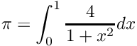

|
TclMPI
1.1
Tcl Bindings for MPI
|


|
|
TclMPI
1.1
Tcl Bindings for MPI
|
|
This page describes Tcl bindings for MPI. This package provides a shared object that can be loaded into a Tcl interpreter to provide additional commands that act as an interface to an underlying MPI implementation. This allows to run Tcl scripts in parallel via mpirun or mpiexec similar to C, C++ or Fortran programs and communicate via wrappers to MPI function call.
The original motivation for writing this package was to complement a Tcl wrapper for the LAMMPS molecular dynamics simulation software, but also allow using the VMD molecular visualization and analysis package in parallel without having to recompile VMD and using a convenient API to people that already know how to program parallel programs with MPI in C, C++ or Fortran.
The package currently consist of a single C source file which usually will be compiled for dynamic linkage, but can also be compiled into a new Tcl interpreter with TclMPI included (required on some platforms that require static linkage) and a Tcl script file. In addition the package contains some examples, a simple unit test harness (implemented in Tcl) and a set of tests to be run with either one MPI rank (test01, test02) or two MPI ranks (test03, test04).
The build system uses CMake (version 3.16 or later) and has been confirmed to work on Linux, macOS, and Windows using a variety of C compilers (GNU, Clang, Intel, PGI, MSVC). You need to have both, Tcl and MPI installed including their respective development support packages (sometimes called SDK). The MPI library has to be at least MPI-2 standard compliant and the Tcl version should be 8.5 or later. When compiled for a dynamically loaded shared object (DSO) or DLL file, the MPI library has to be compiled and linked with support for building shared libraries as well.
To configure and build TclMPI you need to run CMake the usual way, in a console window with with:
There are a few settings that can be used to adjust what is compiled and installed and where. The following settings are supported:
tclmpish executable as extended Tcl shell (default: on)To change settings from the defaults append -D<SETTING>=<VALUE> to the cmake command line and replace <SETTING> and <VALUE> accordingly or you may use the ccmake text mode UI or cmake-gui.
Documentation in HTML and PDF format is extracted from the sources using doxygen, if available. The build of the HTML format documentation is requested with
The documentation will be in folder build-folder/html. To generate the PDF documentation, PDFLaTeX and several LaTeX style packages need to be installed. This is requested using
and the resulting documentation will be in build-folder/tclmpi_docs.pdf.
To install the TclMPI package you can use
which should by default install the compiled shared object and the associated two Tcl files into a subfolder of <CMAKE_INSTALL_PREFIX>/tcl8.6. The default value of CMAKE_INSTALL_PREFIX is system specific, but it can changed with -D CMAKE_INSTALL_PREFIX=/some/path when configuring with CMake, then the installation will be into the corresponding location.
To tell Tcl where to find the package, you need to either set or expand the TCLLIBPATH environment variable to the folder into which you have installed the files or place auto_path [concat /usr/local/tcl8.6/ $auto_path] at the beginning of your Tcl script or in your .tclshrc file (or .vmdrc or similar). Then you should be able to load the TclMPI wrappers on demand by using the command package require tclmpi.
For the extended Tcl shell tclmpish, the _tclmpi.so file is not used and instead tclmpish already includes the coresponding code and needs to be run instead of tclsh. For that you may append the bin folder of the installation tree to your PATH environment variable. In case of using the custom Tcl shell, the startup script would be called .tclmpishrc instead of .tclshrc.
The TclMPI code is maintained using git for source code management, and the project is hosted on github at https://github.com/akohlmey/tclmpi From there you can download snapshots of the development and releases, clode the repository to follow development, or work on your own branch through forking it. Bug reports and feature requests should also be filed on github at through the issue tracker at: https://github.com/akohlmey/tclmpi/issues.
The following section provides some simple examples using TclMPI to recreate some common MPI example programs in Tcl.
This is the TclMPI version of "hello world".
This script uses TclMPI to compute the value of Pi from numerical quadrature of the integral:

This is a small example version that distributes a data set and computes the sum across all elements in parallel.
All TclMPI Tcl commands are placed into the tclmpi namespace.